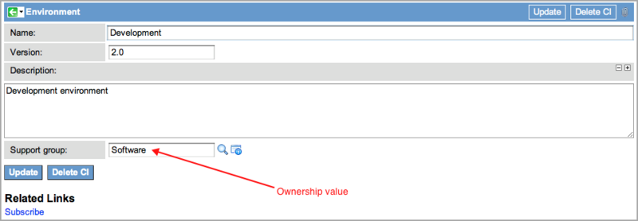

Application Profile Discovery Example
| |
Note: The latest release this documentation applies to is Fuji. For the Geneva release, see Discovery. Documentation for later releases is also on docs.servicenow.com. |
Contents
- 1 Overview
- 2 APD in Linux Environments
- 3 APD in Windows Environments
- 4 APD with Proxy Servers
1 Overview
This page contains these examples of Application Profile Discovery (APD):
2 APD in Linux Environments
The RCD Corporation wants to discover details of their custom human resources application called ResourceNow and create relationships to other processes in their CMDB. As the IT lead, you decide to use Application Profile Discovery (APD) to supply Discovery with information about the application for all the systems on which it is installed.
To use APD to discover the ResourceNow application, you must complete the following tasks:
- Task 1: Create the APD Directories
- Task 2: Enable APD and Set the Environment File Location
- Taks 3: Create the Environment File
- Task 4: Create the Version File
- Task 5: Classify the Application
- Task 6: Run Discovery
2.1 Task 1: Create the APD Directories
You must create at least two directories on a host machine: one for the environment file and another for the version file. The two file types cannot be stored in the same directory. However, you can store multiple files of the appropriate type in each directory. Ensure that the MID Server has permission to read the files in these directory. For this example, create a directory called /APD at the top level of the host machine and another directory at the same level called /APD_version.
2.2 Task 2: Enable APD and Set the Environment File Location
- Navigate to Discovery Definition > Properties.
- In the Application Profile Discovery field , select Yes. (This field maps to the glide.discovery.application_profile_discovery property.)
- Use the appropriate Application Profile Discovery location field (for UNIX or Windows) to name the path to the /APD directory you just created for the ResourceNow environment file.
- Click Save.
2.3 Task 3: Create the Environment File
- In an XML editor, open the environment file template and complete it for the ResourceNow application using the following values:
- Version: Enter 2.0.
- Application: Name the application ResourceNow.
- Label: Configure Development as the name for this environment.
- Description: Enter Development environment for this example.
- Ownership: Add the name of an existing group from the Group [sys_user_group] table that is responsible for managing this environment. For this example, add Software.
- Version path: Enter the path and the name of the version you will create in the next task. For this example, enter /APD_version/ResourceNow_version.xml, where ResourceNow_version.xml is the name of the version file.
- Sub-services provided: Name this sub-service Benefits.
- Sub-services consumed: Name this sub-service Management tool.
- Give the environment file a logical name, such as the name of the application (ResourceNow.xml) and save it to the /APD directory.
2.4 Task 4: Create the Version File
| |
Note: Do not save the version file in the same directory as the environment file. Discovery cannot process version data found in the environment directory. |
- In an XML editor, open the version file template and complete it for the ResourceNow application using the following values:
- Version: Enter the version number for this application. For this example, enter 2.0.
- Application: Use the application name that should appear in the CMDB. In this example, the application is called ResourceNow.
- Type: Leave the default as version.
- Label: Enter a descriptive name. For this example, enter ResourceNow 2.0.
- Description: Describe the purpose of the application briefly. For this example, enter Human Resources management application.
- Ownership: Add the name of an existing group from the Group [sys_user_group] table responsible for managing this application. For this example, enter Enterprise Applications.
- Give this file the same name as entered in the environment file as the version target.
- Save the file in the /APD_version directory created in Task 1.
2.5 Task 5: Classify the Application
For Discovery to classify the custom application, you must create a classification record in the CMDB.
- Navigate to Discovery Definition > CI Classification > Application and click New.
- Complete the Application Classification record, using the following values:
- Name: Enter the application name that should appear in the CMDB. For this example, enter ResourceNow.
- Table: Select Application [cmdb_ci_appl] from the list of tables.
- Relation type: Select the relationship of the application to the host on which it runs. For this example, select Runs on::Runs. For additional information regarding relationships, see Defining CI Relationships.
- Right-click in the header bar and select Save from the context menu.
- Go to the Classification Criteria related list, click New.
- In the Classification Criteria record, enter name in the Name field.
- Click Submit.
- In the Classification Criteria related list, edit the list directly and save the following values:
- Operator: Select contains.
- Value: Enter ResourceNow.
- Click Update.
2.6 Task 6: Run Discovery
When Discovery runs, the MID Server checks for environment files in the directory specified in the location property (/APD/ in this example). The MID Server parses the ResourceNow.xml environment file and finds the path to the ResourceNow_version.xml file. The contents of both files are used to construct the relationships of the application to its configured business services and to the computer on which it runs. You can see these relationships in the following records:
- CI record for the computer host
- Application CI record
- BSM map
2.6.1 Computer CI
The CI Relations Formatter in the host computer CI record displays the relationships of all the business services (including shared services) that run on the machine.

{kind=link}
{kind=link}
{kind=link}
{kind=link}
2.6.2 Application CI
The application CI record is populated with version and environment information and displays the business services connected to that application in the CI Relations Formatter.
{kind=link}
To view the environment details from an application CI record:
- Configure the form to display the Environment related list.
- Click Development in the related list to see the environment details.
- The value in the Support group field is the ownership value from the ResourceNow.xml environment file.
- 
{kind=link}
{kind=link}
2.6.3 Business Service Management Map
To see a graphical representation of the relationship between this application, its business services, and the computer on which it runs, open the CI record for the computer host. Then, click the Business Service Management (BSM) map icon in the header bar of the CI Relations Formatter. The map shows all the business services and applications associated with the computer host, as well as the installed hardware.
{kind=link}
{kind=link}
3 APD in Windows Environments
This example uses a property for Windows systems to set the path location for the environment file. The default path is %ALLUSERSPROFILE%\Application Data\APD, where %ALLUSERSPROFILE% is the environment variable for any Windows system. This variable points to different paths on different versions of Windows. For example, on Windows 7, %ALLUSERSPROFILE% opens C:\ProgramData, and on Windows 2003 server it opens C:\Documents and Settings\All Users.
To create the APD folder on a Windows 2003 server:
- Open Windows Explorer and enter %ALLUSERSPROFILE% in the address bar, then press Enter.
- Create an APD folder in the All Users folder for the environment file .
- In ServiceNow, navigate to Discovery Definition > Properties.
- Locate the Application discovery location for Windows based systems property (glide.discovery.application_discovery.windows_location).
- Using the environment variable, enter the entire path in the Windows file location property, including the APD folder you just created .
- In this example, enter %ALLUSERSPROFILE%\APD, which resolves to C:\Documents and Settings\All Users\APD on Windows 2003.
- Click Save.
- Continue the procedure from Task 3 on this page and copy the completed environment file from that task into the APD folder you created.
{kind=link}
4 APD with Proxy Servers
Some devices that you want to discover might be inaccessible to the MID Server. Examples of this are mainframe computers, a server whose credentials are not in the Credentials [discovery_credentials] table, and a switch that does not have a file system for storing XML files. For such devices, create an environment file that identifies the inaccessible device, and then put that file on a proxy server where the file is visible to the MID Server. Place the version file on the same proxy server, but in a different directory than the environment file. The MID Server locates the environment file in one of the expected locations on the proxy server and reads the path to the version file. The MID Server includes the environment and version data in the sensor package, without exploring the hidden system.
To create APD files for an SAP application on a server (any OS) for which no credentials are available:
- Navigate to Discovery Definition > Properties and find the property for the proxy server's operating system.
- In this example, use the Application discovery location for UNIX based systems property (glide.discovery.application_discovery.unix_location) for a Linux proxy server. This example uses the default path of /etc/opt/apd/, although it could use any path.
- On the Linux proxy server, create an APD folder in the default UNIX path: /etc/opt/apd/.
- Note: By default, Discovery looks for the environment file in this location on all UNIX machines.
- Use the template to create an SAP environment file for a Solaris server that does not have Discovery credentials.
- system: The namer of the inaccessible computer on which the SAP application is running. For this example, sol13.lab2 is the name of the Solaris computer with no credentials for Discovery.
- application_version_path: Specify the path to the SAP version file on the proxy server. For this example, enter /etc/opt/apd_version/sap_version.xml. The version file must be on the same computer as the environment file but in different directories.
- Save the environment file to the /etc/opt/apd/ directory.
- Create the version file directory using the path specified in the environment file.
- For this example, create a directory called apd_version on the same level as the apd directory. Remember that the version file cannot be in the same directory as the environment file.
- Use the template to create a version file called sap_version.xml and save it to the /etc/opt/apd_version directory.
- Continue the process at Task 5 on this page.
{kind=link}